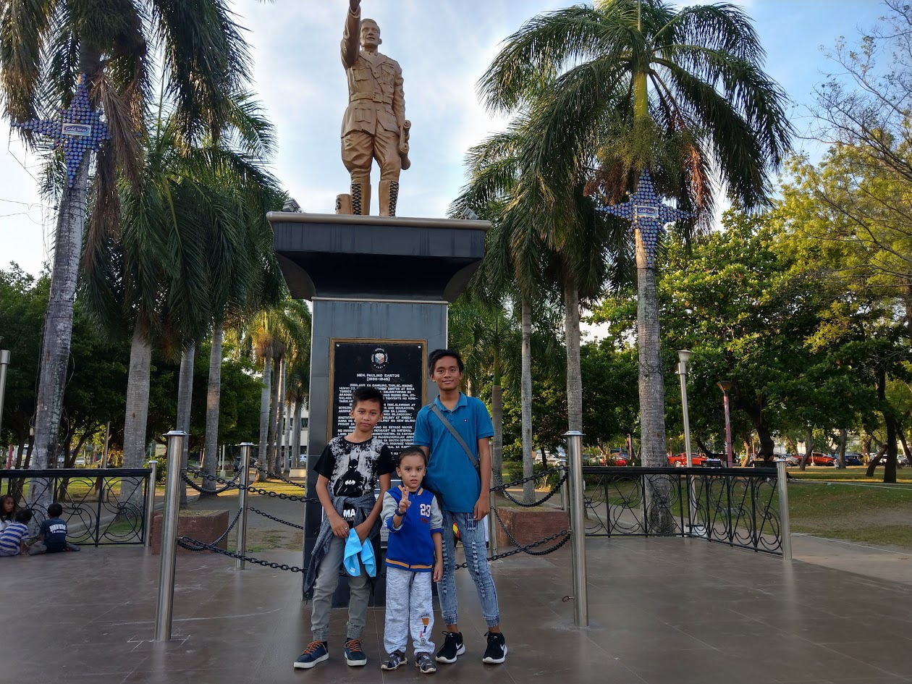

Things To Do in GenSan
Best Time to Visit
Morning or Afternoon
Location
Downtown General Santos City
Plaza Heneral Santos
Relax in the green heart of downtown, enjoy a morning walk or afternoon exercise, and visit nearby city landmarks.
City Landmark
The Green Heart of Downtown
Located in the heart of downtown General Santos City, Plaza Heneral Santos is a relaxing public space where visitors can enjoy greenery, fresh air, and the lively atmosphere of the city. Its landscaped gardens, walking paths, bridges, and the monument of General Paulino Santos make it a pleasant place for sightseeing, family bonding, and taking memorable photos.
The best time to visit is early morning or late afternoon, when the weather is cooler. The plaza is also a popular spot for jogging, walking, biking, stretching, group exercises, and Zumba sessions.
Because of its central location, the plaza is surrounded by many important establishments, including churches, hotels, restaurants, shops, government offices, and the city hall. It is an ideal stop for travelers who want to relax while exploring downtown General Santos City.
Suggested Route
Best time to go: Morning or Afternoon
- ARRIVECome early or late afternoon for cooler weather.
- WALK AROUNDTake a leisurely walk and enjoy the landscaped gardens.
- PHOTO STOPCapture photos at the statue, lagoon, bridges, and plaza marker.
- EXERCISEUse the open paths for jogging, walking, or light stretching.
- GROUP ACTIVITYJoin locals in Zumba or other outdoor fitness sessions.
- RELAXSit back, enjoy the fresh air, and watch the city move around you.
- EXPLORE NEARBYVisit nearby churches, hotels, restaurants, and shops.
- END YOUR VISITFinish with a relaxing walk, a few final photos, or a quick stop at a nearby cafe or restaurant.
Plaza Heneral Santos visitor information
Best For
Easy downtown activities
- Jogging and walking
- Morning and afternoon exercise
- Zumba and group fitness
- Biking and skating
- Family bonding and relaxation
- Taking photos
- Meeting up with friends
Quick Info
Visit details
- Best Time to Go
- 6:00 AM - 9:00 AM
4:00 PM - 6:00 PM - Location
- Downtown General Santos City
- Amenities
- Benches, garden, open space, walking paths, bridges, and lagoon area
- Tip
- Bring water, wear comfortable clothes, and stay hydrated.

Stay active in the heart of the city. Plaza Heneral Santos is perfect for your morning run, exercise, or relaxing walk.
Need a Ride?
Call a trusted local taxi to take you to Plaza Heneral Santos.
- Reliable
- Safe
- Comfortable
- Advance Booking Available
Plaza Heneral Santos
Gensan City Taxi
Reliable Airport & City Taxi Service in General Santos City, Philippines. Safe | On-Time | Comfortable | Advance Booking Available Message us to reserve your ride today.
0935 025 5176Photo Stops
More Plaza moments


0 People Reacted
Was this guide helpful?
Explore Nearby